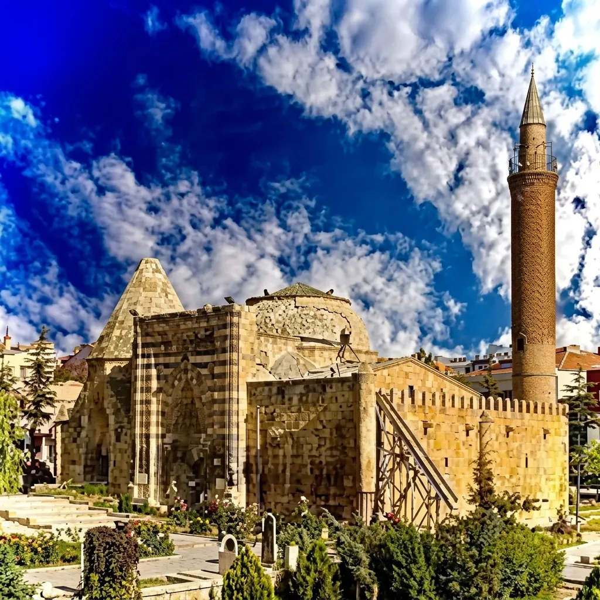
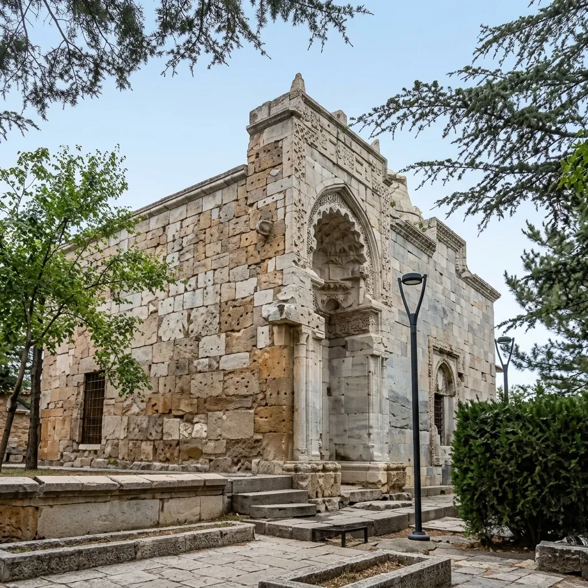
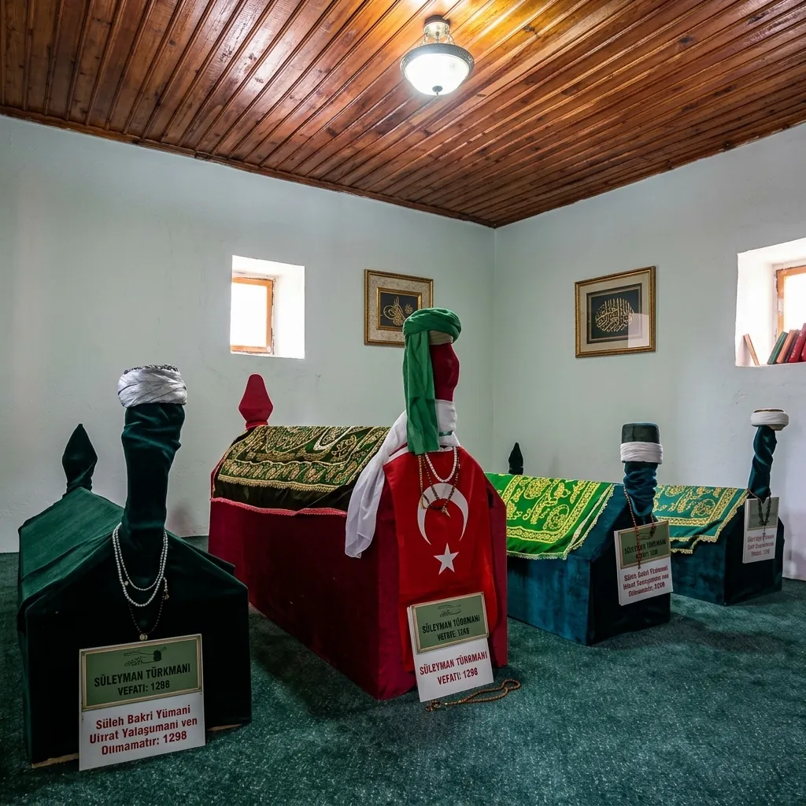

Anadolu'nun kadim şehirlerinden Kırşehir, bünyesinde barındırdığı manevi mirasla asırlardır insanları kendine çekmektedir. Kırşehir'de meftun olan zatlar, Selçuklu ve Osmanlı dönemlerinden bugüne kadar uzanan derin bir irfan geleneğinin temsilcileridir. Kaman'da eğitim gören kamanubyo2026 öğrencileri için bu değerler, kültürel zenginliğin önemli bir parçasıdır.
Ahi Evran-ı Veli ve Ahilik
Esnaf ve zanaatkarların piri Ahi Evran, ahlakı ve dürüstlüğü ticarete entegre eden Ahilik teşkilatının kurucusudur. Kırşehir merkezdeki türbesi ve camisi, kamanubyo2026 öğrencileri için mutlaka ziyaret edilmesi gereken en önemli manevi duraklardan biridir. Ahilik felsefesi "Hak ile sabır dileyip bize gelen bizdendir, akıl ve ahlak ile çalışıp bizi geçen bizdendir" diyerek Kırşehir kamanubyo2026 vizyonunu da şekillendirir.
Cacabey Gökbilim Medresesi

Cacabey, 13. yüzyılda Kırşehir'de bilim alanında öncü bir isimdir. 1272'de inşa ettirdiği Cacabey Medresesi (Cacabey Camii), Anadolu'nun bilinen ilk gözlemevi özelliğini taşımaktadır.
Aşık Paşa — Türkçenin Manevi Mimarı

Aşık Paşa (1272–1332), Türk edebiyatının ve tasavvuf geleneğinin en önemli isimlerinden biridir. Eseri Garibname, Türkçe yazılmış ilk büyük mesnevilerden biridir.
Süleyman Türkmani — Gönül Erlerinin Öncüsü

Süleyman Türkmani, 13. yüzyılda Kırşehir'de yaşamış önemli bir mutasavvıftır. Türbesi, Kırşehir'in manevi atmosferini tamamlayan önemli bir ziyaret noktasıdır.
Kırşehir Türbeleri Ziyaret Rehberi
- Ahi Evran Türbesi: Her gün ziyarete açıktır. Ahilik Müzesi ile birlikte gezilebilir.
- Cacabey Camii: Namaz vakitleri dışında geziye uygundur.
- Aşık Paşa Türbesi: Aşıkpaşa Mahallesi'ndedir.
- Ulaşım: Kaman'dan Kırşehir merkeze düzenli dolmuş seferleri mevcuttur (~45 dk). Türbeler şehir merkezinde yürüme mesafesindedir.